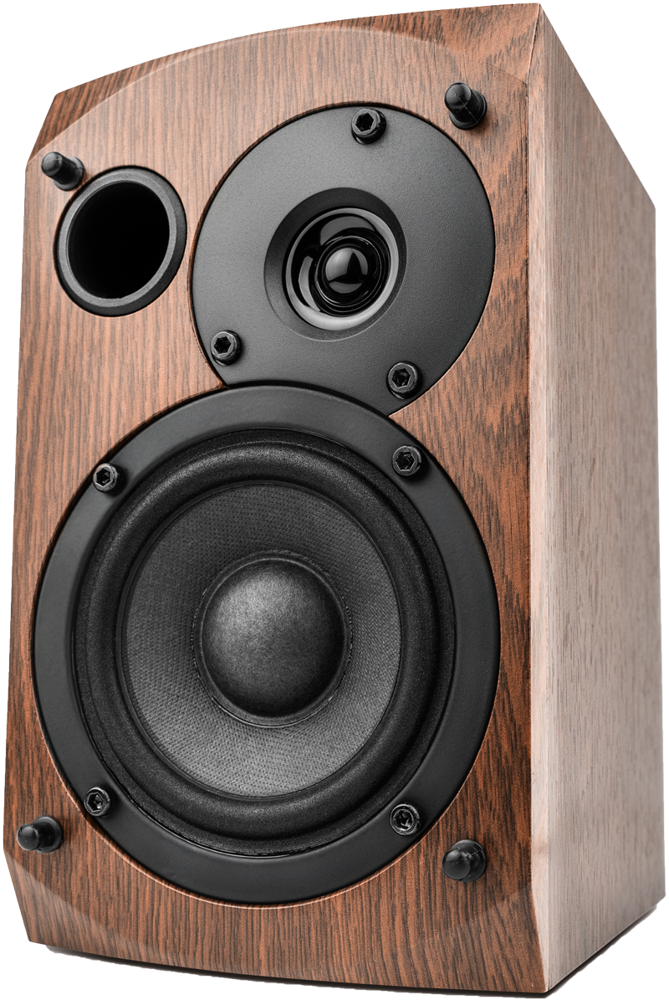

Le casque audio

Produits populaires



Probeats est une marque qui a été créée en 2020. Elle n’a encore aucune part sur le marché de l’audio, et n’a pour l’heure vendu aucun produit. Les tests en laboratoire viennent d’être confirmés et les produits sont prêts à être commercialisés. Cette nouvelle marque, à la pointe de la technologie, souhaite s’implanter sur le marché audio en se positionnant comme futur leader des appareils auditifs sans fil. Elle mise sur une haute-qualité d’écoute et une performance longue durée. Elle s’adresse à une cible jeune et mobile.